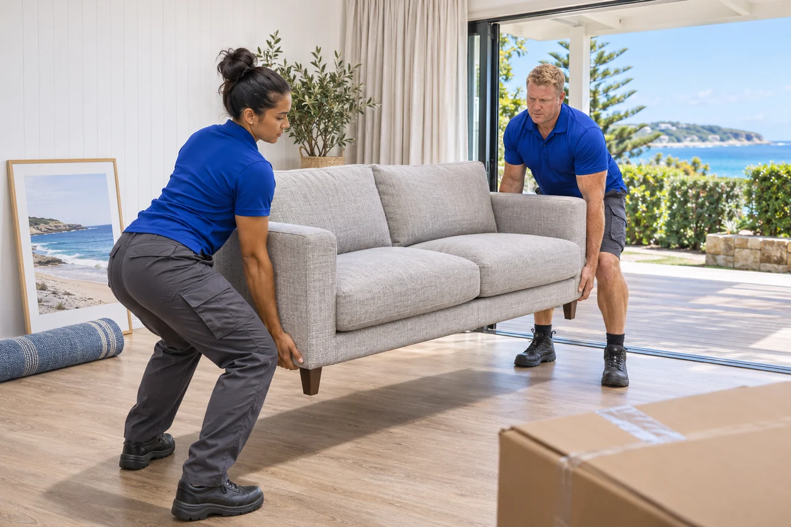
01 / YOUR KIND OF MOVE
House removals
A home is more than the living room. Include the garage, outdoor pieces and all the boxes in between.
Explore this moveFrom the first packed box to your favourite spot in the new place. Make room for a move that feels organised, personal and a little easier.
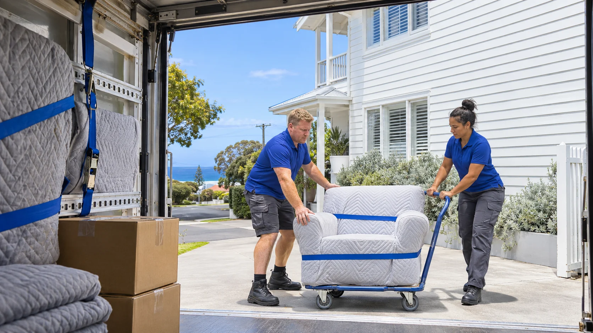
A bigger place. A smaller space. A new working day. Start with the move you need, then add the help that makes it yours.

A home is more than the living room. Include the garage, outdoor pieces and all the boxes in between.
Explore this moveStairs, lifts and loading zones can shape a smaller move. Plan the access at both addresses.
Explore this move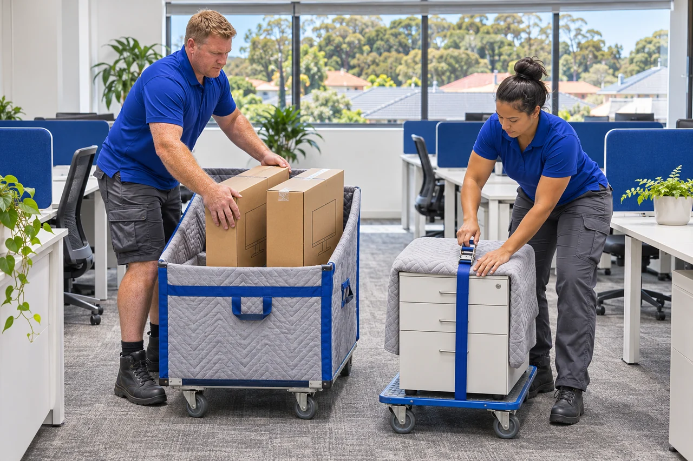
Keep your working day in mind. Plan the desks, equipment, access and what needs to be ready first.
Explore this move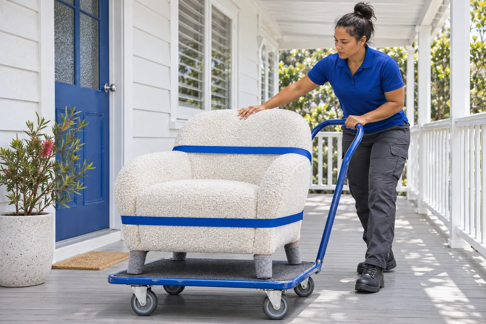
A new armchair, a dining set or a small load. A clear item list helps arrange the right size of move.
Explore this moveMore than one service? That’s a perfectly normal move.
Put it all in one planChoose help with the delicate things, selected rooms or the whole house. Agree on the materials and tasks before the first box is filled.
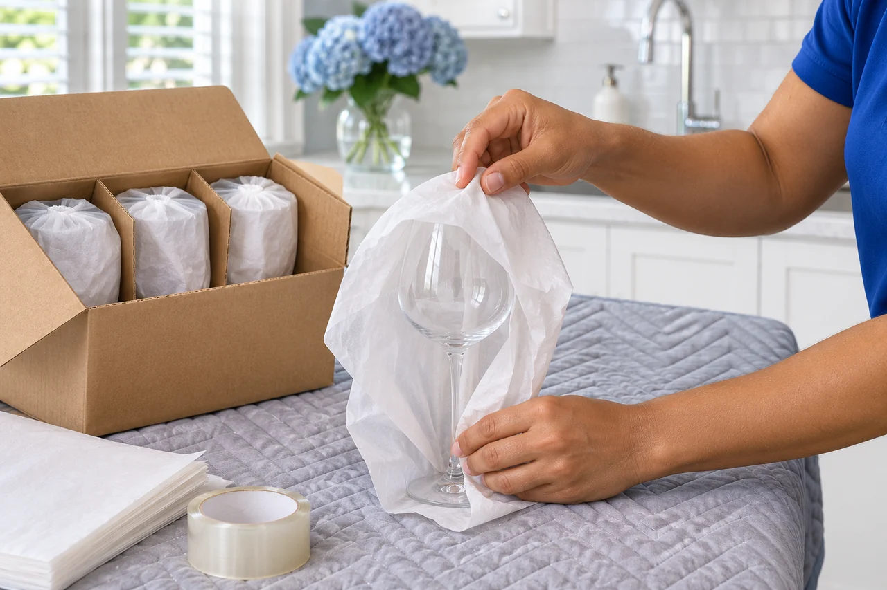
Glassware, artwork and delicate finishes need their own conversation. Show what needs protection and how you’d like it packed.
Include fragile packing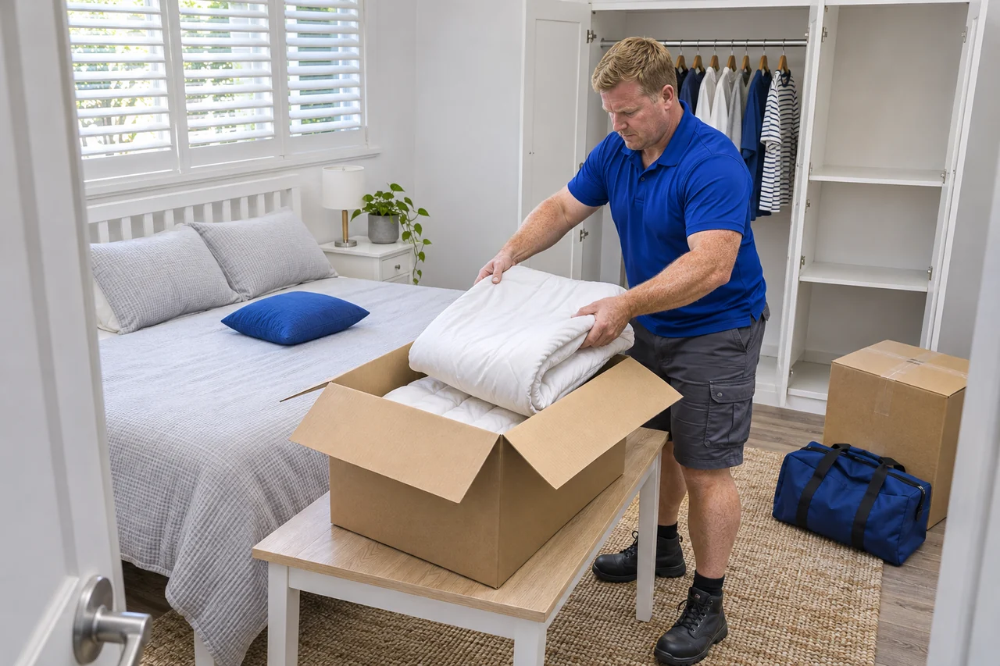
Make the rooms, box quantities and packing materials part of the agreed scope.
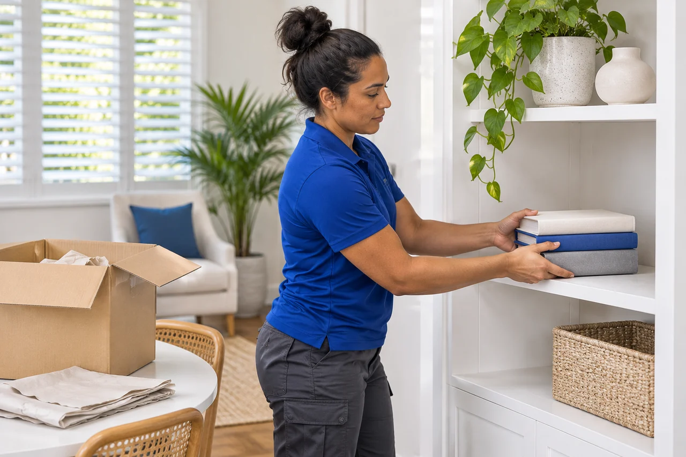
Discuss unpacking, agreed placement and what happens to used materials.
Flag these early so the item, access, equipment and accepted tasks can be considered together.
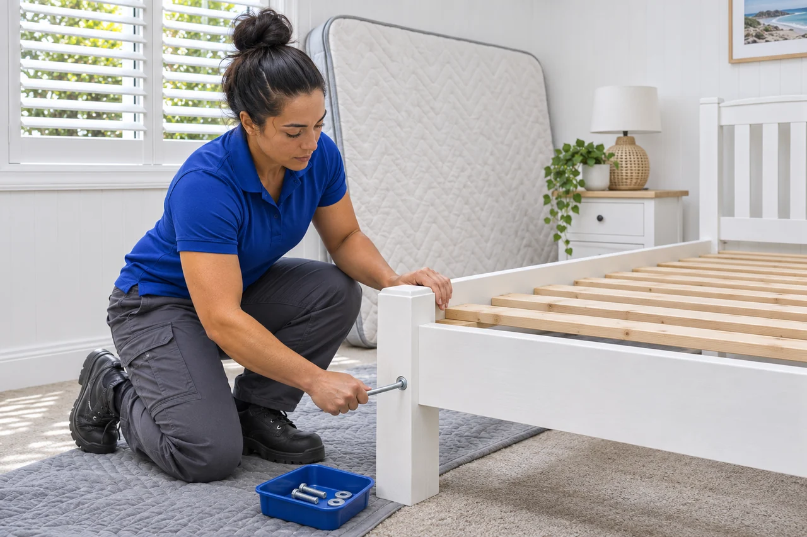
Beds, tables and the pieces that need taking apart. Agree on the exact items, fittings and reassembly before moving day.
Which pieces, tools and fittings are involved? Photograph complicated furniture and keep its instructions if you have them.
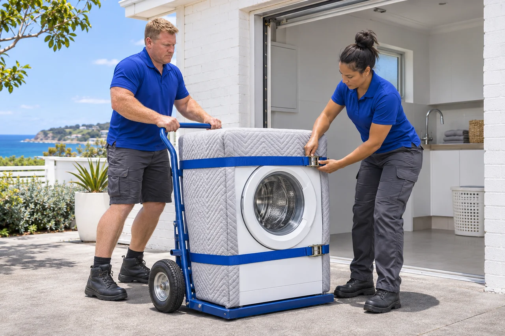
Fridges, washers and everyday essentials. Share dimensions and check preparation and connection arrangements.
What needs disconnecting or preparing? Check the manufacturer’s instructions and arrange any required licensed installation separately.
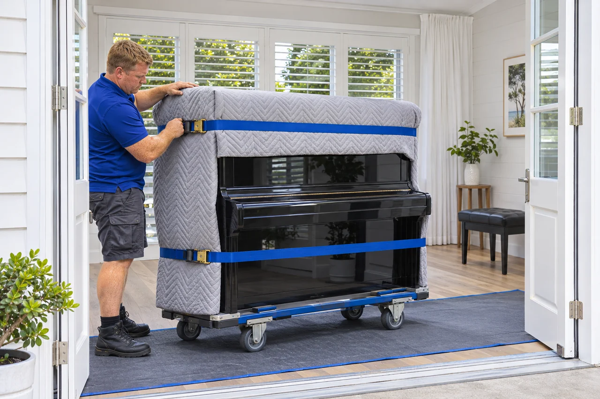
Unusual size, weight or access deserves its own plan. Describe the item before it is accepted into the booking.
What type of item, approximate weight and access? Include steps, tight turns and photos so equipment and suitability can be assessed.
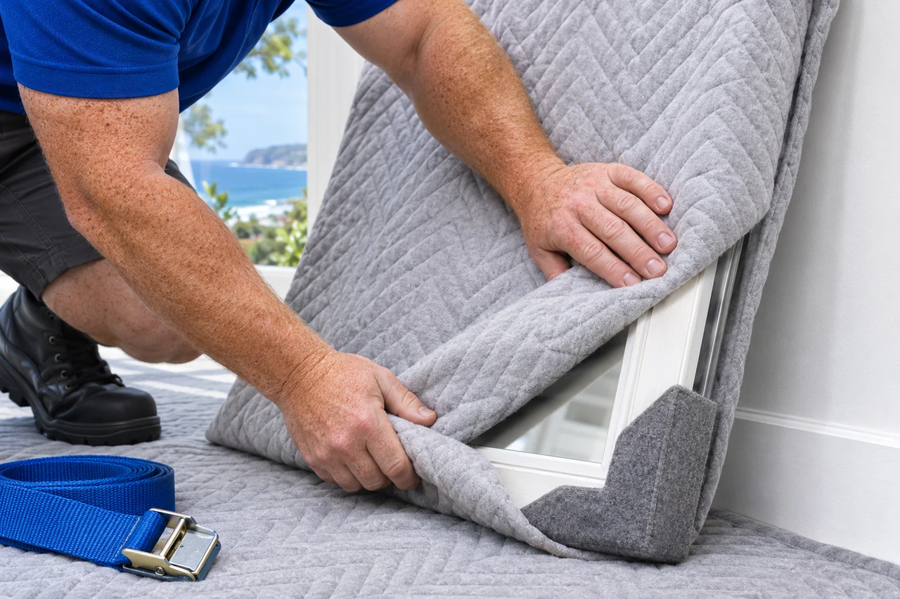
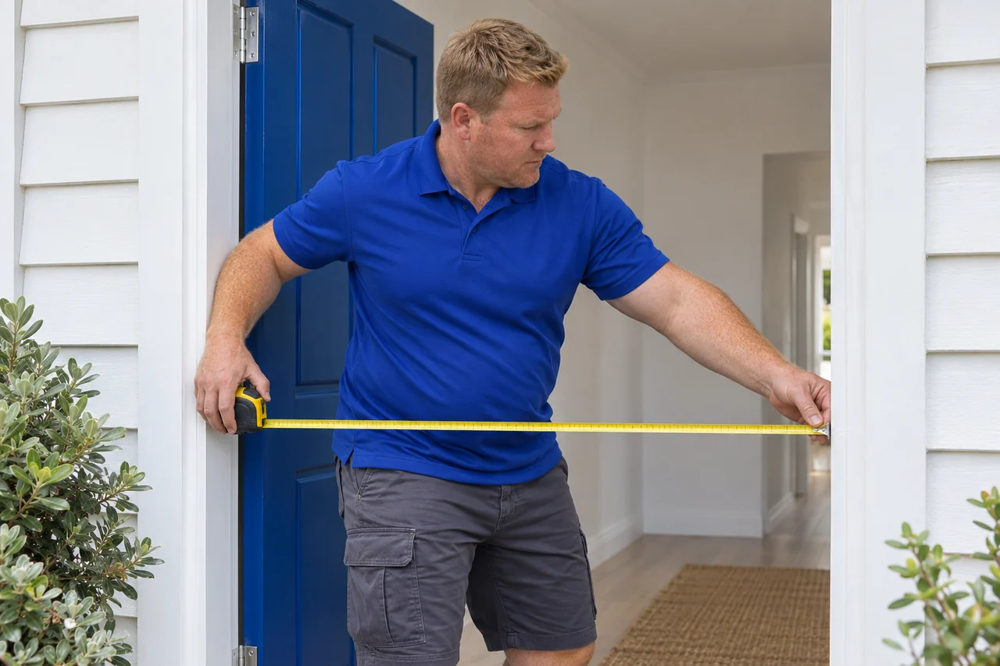
A doorway, a loose table leg, a delicate finish. The small things can shape the whole job.
Share existing marks, fragile finishes and items that need individual preparation.
Include doorways, steps, lifts, parking and the full route at both properties.
Ask for cover, exclusions, excess and the reporting process in writing.
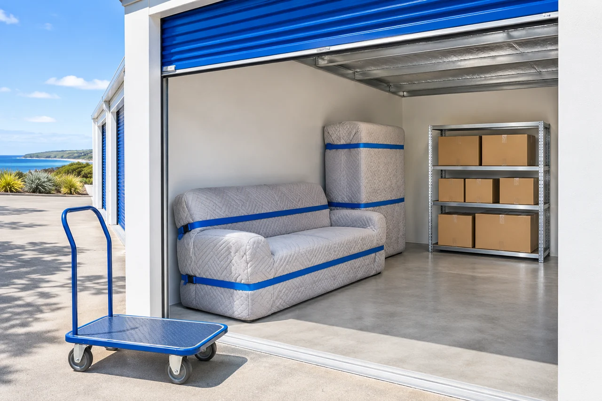
Dates don’t always line up. Ask about space, duration, access to your belongings, handling in and out, and onward delivery.
Add storage to my plan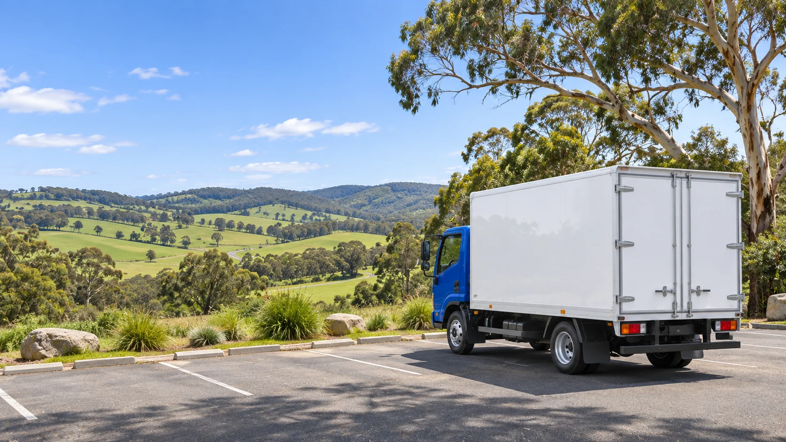
Share your suburbs and date flexibility. Confirm the route, collection and delivery windows, load arrangement and progress updates.
Plan a longer journeyRoutes, storage arrangements and availability are confirmed for your individual move.
Downsizing can mean more decisions, not fewer belongings. Start with what’s coming, what needs extra care and who will help coordinate the day.
A good quote starts with the actual job. Explore the details below, then use the same scope when comparing arrangements.
Furniture, approximate box numbers, outdoor belongings and special pieces help explain the load, crew and vehicle needed.
Pickup, destination, extra stops and delivery timing all belong in the quote conversation.
The path can matter as much as the load. Describe parking, walking distance, stairs, lifts and tight turns at each address.
Packing, materials, furniture tasks, storage and unpacking should be listed clearly in the agreed scope.
Confirm the crew and vehicle, minimum time, when chargeable time starts and finishes, travel charges and waiting time.
Confirm the inventory, addresses, access and services it covers. Ask what happens if any of those details change.
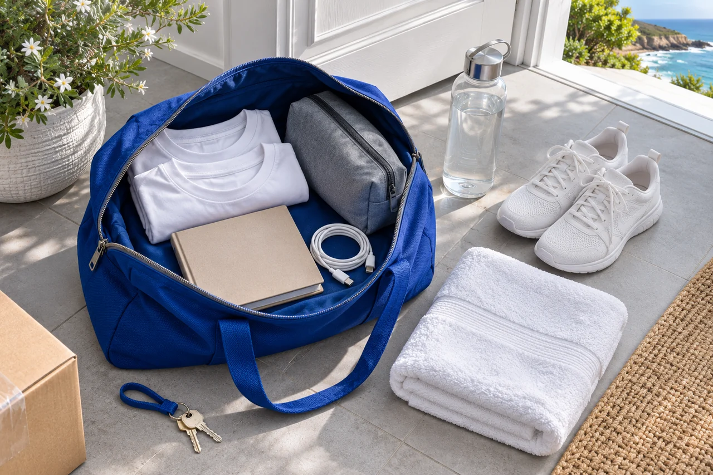
Keys, chargers, toiletries, a change of clothes and the things you’ll need before everything is unpacked.
Tick things off as you prepare. Your checklist is remembered in this browser.
Add a pickup suburb to your plan, then tell us the full route. Service and date availability need individual confirmation.
Clear answers help you make a useful plan. Open a question to find the details worth discussing.
The price depends on your belongings, travel, access, crew, vehicle and any extra help. Prepare an item list and describe both addresses. Ask for the charging basis, inclusions and anything that could change the total in writing.
Yes, you can start a plan for a small load. Include each item’s dimensions, pickup and delivery suburbs, access and preferred timing. Ask about minimum booking time or travel charges before accepting the arrangement.
Start discussing the move once you know the likely dates, especially if you need a weekend or a fixed handover time. A submitted plan does not hold a date; availability and the booking need confirmation.
Give a likely week or a flexible date range. Explain any settlement, lease or key-collection deadlines. Ask how the proposed arrangement handles changes before you confirm it.
You can plan for full packing, fragile items only, or help with selected rooms. Make the split clear and agree on materials, labour and what unpacking includes. Keep essentials and valuables separate.
These should be listed in the scope rather than assumed. Confirm the quantity and type of materials, packing time, furniture tasks, unpacking and any collection of used materials.
Describe access at both properties, including steps, lift dimensions or bookings, loading restrictions and distance from truck to door. Photos can help the provider assess what is practical and whether charges change.
Include your collection date, expected storage period and onward destination. Ask about space, access to stored belongings, handling in and out, storage terms and separate transport charges.
Add both suburbs or postcodes and your flexibility. Route availability, delivery windows, load arrangements and services need individual confirmation. Ask how progress updates will be provided.
Request the provider’s actual protection arrangements in writing, including what is covered, exclusions, any excess and the process for reporting an issue. Point out existing marks and delicate finishes before work starts.
Describe the item type, dimensions and approximate weight if known. Share photos of the item and access route. Specialist equipment, crew and suitability need assessment before the item is accepted.
This HTML concept creates a moving brief for you to review and download. It does not send an enquiry, take payment or reserve a date. The website owner can connect a live enquiry service before launch.
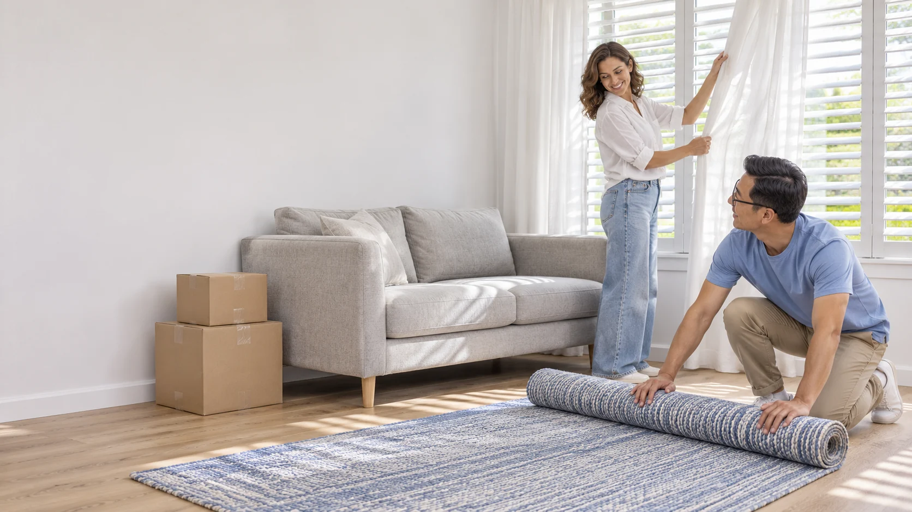
The next step can be a simple one.
Start with what you know.
You don’t need every box counted. Start with the locations and the kind of help you’re looking for.
Locations, timing, belongings and access.
Download a copy to use in a quote conversation.
Agree on the scope, price, date and terms with the provider.
Your form details stay in this tab. This concept creates a downloadable brief; it does not send an enquiry or reserve a date.
Review the details and download a copy. You can use it to discuss a quote and confirm the next steps.
Nothing has been sent. No date or service is reserved.